Tutoriais
Imagem com efeito de zoom ao passar o mouse
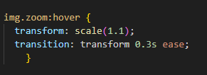O efeito de zoom na imagem é criado usando a propriedade CSS transform: scale(), que aumenta ou diminui o tamanho do elemento. Para aplicar o efeito apenas quando o mouse estiver sobre a imagem, usamos o seletor :hover. Além disso, a propriedade transition é usada para suavizar a animação, fazendo com que o zoom aconteça de forma gradual e não brusca.
Tutorial
Para criar um efeito de zoom em uma imagem ao passar o mouse, usamos a propriedade CSS transform: scale() para aumentar o tamanho da imagem. Aplicamos o efeito apenas quando o mouse está sobre a imagem usando o seletor :hover. Para que o zoom aconteça de forma suave, adicionamos a propriedade transition, que controla a duração e o estilo da animação.
Layout com 3 colunas usando Flexbox (CSS)
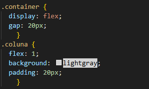O Flexbox organiza elementos em linha. Para um layout com 3 colunas, usamos display: flex no container e flex: 1 em cada coluna para que tenham tamanho igual e se ajustem ao espaço disponível.
Tutorial
Para criar um layout com três colunas usando Flexbox, primeiro crie um container no HTML que envolva três elementos filhos — cada um será uma coluna. No CSS, defina esse container com display: flex, o que faz com que os elementos fiquem lado a lado em uma linha. Depois, aplique flex: 1 para cada coluna para que todas tenham o mesmo tamanho e se ajustem proporcionalmente ao espaço disponível. Você pode adicionar espaçamento entre as colunas usando a propriedade gap. Assim, o layout fica flexível, responsivo e fácil de organizar.
Fixar o rodapé no fim da página (HTML + CSS)
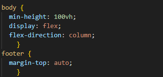Para fixar o rodapé no fim da página, usamos o CSS Flexbox definindo o body como flex container em coluna e fazendo o conteúdo principal crescer com flex: 1. Isso mantém o rodapé sempre no final da tela, mesmo com pouco conteúdo. É um jeito simples e eficaz de garantir que o rodapé não “suba” na página.
Tutorial
Ao transformar o body em um contêiner flexível com display: flex e flex-direction: column, os elementos filhos (conteúdo e rodapé) ficam organizados em uma coluna vertical. Aplicando flex: 1 no conteúdo principal, ele cresce para ocupar todo o espaço disponível entre o topo e o rodapé. Isso faz com que o rodapé fique sempre “empurrado” para a parte inferior da tela, mesmo que o conteúdo seja pequeno.
Texto com gradiente de cor (CSS)
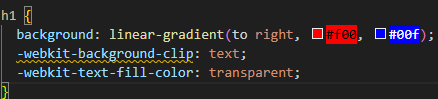O texto com gradiente de cor é um efeito visual criado com CSS que aplica um degradê no fundo e usa o próprio texto como uma "máscara" para mostrar o gradiente dentro das letras. É bonito, moderno e funciona bem para títulos e destaques em sites!
Tutorial
Para criar um texto com gradiente no CSS, usamos um fundo colorido com linear-gradient e aplicamos -webkit-background-clip: text para recortar esse fundo no formato das letras. Em seguida, usamos -webkit-text-fill-color: transparent para deixar o texto transparente e mostrar apenas o gradiente. Esse efeito funciona muito bem em títulos e pode ser animado para ficar ainda mais moderno — tudo usando apenas HTML e CSS.
Colocar ícones com HTML usando o site
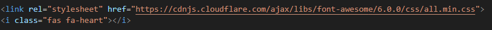O Font Awesome é uma biblioteca que permite usar ícones no site sem imagens. Basta adicionar um link no HTML para carregar a biblioteca e inserir tags com classes específicas para mostrar os ícones. Eles funcionam como caracteres especiais e podem ser estilizados com CSS.
Tutorial
Para usar ícones do Font Awesome, adicione um link no <head> do HTML para carregar a biblioteca. Depois, insira a tag <i> com classes que indicam o ícone desejado. Você pode personalizar os ícones com CSS para mudar cor, tamanho e estilo.
Centralizar tudo no meio da tela (CSS)
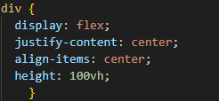Para centralizar um elemento no meio da tela com CSS, usamos Flexbox definindo display: flex no container. Depois aplicamos justify-content: center para centralizar horizontalmente e align-items: center para verticalmente. Com height: 100vh, o container ocupa toda a altura da tela, garantindo que o conteúdo fique exatamente no centro.
Tutorial
Para centralizar um elemento no meio da tela, usamos o CSS Flexbox. Primeiro, definimos o container com display: flex, que ativa o modo flexível. Depois, aplicamos justify-content: center para alinhar o conteúdo no centro horizontalmente e align-items: center para alinhar no centro verticalmente. Também definimos a altura do container como 100vh, que é 100% da altura da tela, garantindo que o conteúdo fique exatamente no meio, independentemente do tamanho da tela ou do conteúdo.
Imagem responsiva que se adapta ao tamanho da tela (CSS)
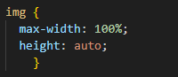Para isso, usamos no CSS as propriedades max-width: 100% e height: auto. A propriedade max-width: 100% garante que a largura da imagem nunca ultrapasse o tamanho do seu contêiner, evitando que ela “estoure” o layout. Já height: auto mantém a proporção da imagem, para que ela não fique deformada quando a largura muda.
Tutorial
Para criar uma imagem responsiva, basta adicionar uma classe à sua imagem no HTML e usar CSS para limitar sua largura máxima a 100% do contêiner onde ela está. Isso evita que a imagem ultrapasse o espaço disponível. Além disso, definimos a altura como automática para manter a proporção da imagem e evitar distorções. Dessa forma, a imagem se ajusta ao tamanho da tela ou do elemento pai, ficando sempre proporcional e sem “estourar” o layout.
Navegação fixa no topo (HTML + CSS)
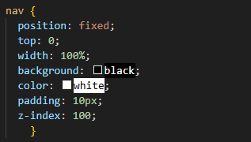A navegação fixa no topo usa position: fixed para manter o menu sempre visível no topo da página, mesmo ao rolar o conteúdo. Geralmente, definimos top: 0, width: 100% e z-index para garantir que fique acima dos outros elementos.
Tutorial
Para criar uma navegação fixa no topo, você deve primeiro estruturar o menu dentro da tag
Card simples com sombra e borda arredondada
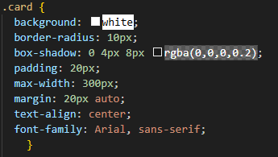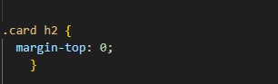
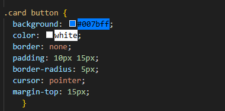
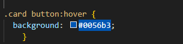
Um card é uma caixa visual usada para agrupar informações relacionadas, como texto, imagens e botões, em um formato organizado e atraente. Ele funciona como um bloco que destaca conteúdo específico na página, facilitando a leitura e a interação do usuário.
Tutorial
Crie um card usando uma